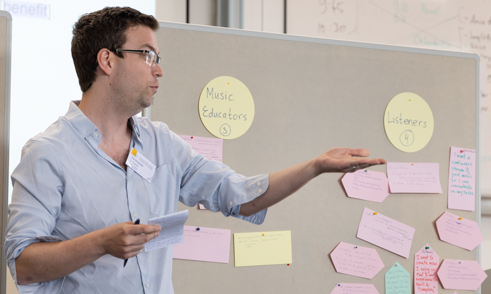

CS 372: Digital Music Processing
Ursinus College, Spring 2025
A schematic of The Concatenator, a new synthesis technique I invented to automatically mash up sounds in a corpus to match the rhythm and pitch of an incoming target. Students will implement a vanilla version of this in HW5.
The spectrogram and audio novelty function of a clip from Let It Be by The Beatles. The audio novelty function is used to indicate likely locations of beat onsets, and students will use it to do tempo estimation and beat tracking in homework 4.
Chroma features from two different versions of Grand Illusion are similar, which helps us to recognize that they are the same song

A schematic of the Karplus-strong algorithm for plucked string synthesis, courtesy of Wikipedia. Students will implement this in homework 2.
Audio fingerprint extraction, an important process in the Shazam Algorithm for identifying recordings in the wild. Students will explore this algorithm and reverse engineer it to create an "adversarial attack" known as beepy tunes to trick Shazam.
Table Of Contents
Overview
Class Times / Locations
- Monday/Wednesday/Friday, 1:30-2:20PM in Pfahler 106
Student Office Hours
-
Monday/Wednesday/Friday 3:30PM - 5PM, Pfahler Hall, 106
Prerequisites/Requirements
Math 111 or equivalent, CS 173 or equivalent
Instructor
Picture from Dagstuhl summer 2024
I grew up right around the corner in the Montgomery County and attended Upper Dublin High school (class of 2007). I then did my undergraduate degree in Electrical Engineering at Princeton University and my master's and Ph.D. degrees in Electrical And Computer Engineering at Duke University (heavily studying math and CS along the way). I finally started my dream job at Ursinus College in Fall of 2019! You can read more about my interests on my professional web site. Looking forward to getting to know everyone as we work through this course together!
Course Description
This hands-on course will take a broad overview of how to represent, analyze, and morph/transform digital musical audio with a computer. My goal at a high level is by the end of the semester, students should be able to walk into a poster session at a conference like ISMIR or DAFX and understand roughly what's going on. On the synthesis/transformative end, students will create digital musical instruments, they will learn how to filter and denoise audio, they will create programs such as vocoders (e.g. "talking guitars") and autotuners (i.e. "I Am T-Pain"), and they will implement algorithms to automatically time warp and align different versions, or "cover songs," so that they can be compared side by side, even when the timing is different. On the analysis end, students will train a computer to automatically figure out what notes a person is playing, to "tap a virtual foot" to the beat, to discover repeated sections such as verse/chorus, to identify a tune from small clips of audio (the so-called "Shazam algorithm"). The course will culminate with some modern deep learning techniques for analyzing and synthesizing musical audio, using pytorch.
In the process of implementing the above algorithms, students will gain familiarity with a fundamental tool known as the Discrete Fourier Transform, which allows us to break audio down into its fundamental components: a bunch of pure sine waves added together. This amazing way of looking at audio will allow us to "put on a different set of glasses" to find patterns and filter out parts of audio more easily.
Learning Goals
- Develop broad knowledge of analysis and synthesis techniques for digital audio, with an eye towards musical applications.
- Learn how to incrementally design, implement, and test signal processing pipelines in code.
- Use mathematical and physical models to synthesize audio and to process messy real-world data.
Learning Objectives
- Practice patient problem solving by developing comfort with the edit -> compile -> run loop, along with intermediate debugging skills.
- Implement algorithms based on the Short-Time Fourier Transform for a variety of analysis and synthesis tasks in audio.
- Implement several classical algorithms for different audio tasks, such as the "Shazam algorithm," pitch tracking, beat tracking, time warping, and demixing audio.
- Develop a working knowledge of data driven techniques for music analysis and synthesis using modern deep neural networks in pytorch.
Technology Logistics
We will be using a zoo of technologies in the course, as has become standard in 21st century work environments. Below is a table summarizing what kinds of communications/activities occur via each technology, and below that there are more details on everything. This is admittedly complex, and it will take some getting used to, but it will be worth it once we get it nailed down.
NOTE: I will repeat the same announcements across e-mail and Discord, so you don't have to check all both for announcements.
| Class web site (You are here!) |
|
| Canvas |
|
| Discord |
|
|
*: For privacy reasons, anything of a personal nature, and particularly things that have to with educational records (e.g. grades), need to be kept within Ursinus sanctioned platforms like Outlook e-mail.
Canvas
We will be using Canvas, but only to submit assignments and to store all of the grades. I will also keep all of the due dates current on the calendar there, as students have appreciated this common space for all of their classes in the past.
Discord / Anonymous Questions
To facilitate informal, class-wide discussions about the class, as well as buddy group coding with screen sharing, we will have a Discord channel for the class. My goal is for this to turn into a flourishing area to work through confusion and to share ideas as a group.
Voltaire Anonymous Questions
All questions are welcome! To help break down the barrier of asking questions, we will be using the chat bot Voltaire so students can ask questions anonymously. This has worked very well in the past. To use Voltaire, send a direct message to the Voltaire bot with the following syntax:
where channel_name is the name of the channel you want to post to, and message is the text you want to send. Below is an example:
Answer:
\[ u \cdot v = |u| |v| \cos(\theta) \]
In Class Anonymous Questions
In addition to Voltaire, I'll be running a bot during class that accepts questions to help quieter student who want to participate anonymously to do so. I've found this sort of thing to be particularly helpful with students from underrepresented groups. To ask a question during class, visit this link.
Other Rules
Do not send me direct messages or anything of a sensitive nature (e.g. grades) over Discord. Instead, use e-mail for that, since those transactions are locked down better under Ursinus control.
Readings
There will be no official textbook for the course. Instead, I will be flipping about 2/3 of the classes with a number of modules that I made for you to complete before class.
At times, I will provide readings/links to a wonderful, freely available textbook on digital signal processing by Brian McFee, the creator of librosa, to supplement the modules and in class work
Deliverables
Programming Languages
There has been a long tradition of implementing multimedia algorithms in Matlab. The downside of Matlab is that it is proprietary and quite expensive, and aspects of the language beyond matrix multiplications are not very elegant. Thankfully, in recent years, a library in Python known as numpy has matured and allowed the Python language to accomplish everything that Matlab could with digital audio. So though the focus is more on the algorithms themselves, we will learn python and numpy as we go along in this class, and these are valued skills in data science well beyond audio processing.
Pre-Class Modules
Since there is so much domain specific content knowledge in addition to programming knowledge, this is different from an ordinary CS course. Hence, I want students to have thought about it a bit before coming to class so we can answer deeper questions and do more interesting exercises. You have the space to do this since it's a 4 credit course with only 150 minutes of contact hours per week. Therefore, I will be following a largely flipped model with 2-3 modules per week that walk you through concepts with videos I made, followed by autograded python/numpy exercises.
To further incentivize close study of these modules, I will be having an in class pen/paper midterm on units 1/2 and a pen/paper final on all 4 units.
I worked hard on these modules, so I hope you enjoy them, and I hope it's an opportunity for you to study at your own pace!
NOTE: These modules are meant to be low stakes compared to the assignments, so please reach out to me or post on discord to the rest of the class if you get stuck on anything. I'm looking forward to some lively discussions as students work through them!
Assignments
The bulk of the grade in the course will be earned by completing roughly 6 programming assignments. Be sure to start them early! Note that collaboration and sharing rules differ slightly between the individual assignments and the large assignments.
NOTE: I will not grade assignments that do not run! So be sure to hand in code that runs. Send me or the class messages ASAP when you run into syntax errors you can't resolve on your own.
Debugging Principles
If you're taking this course, then you've certainly had experience with debugging, but it is a skill you will still need to work on, so you should expect to hit some roadblocks. In fact, it is time consuming and difficult even for very experienced programmers. So do not be hard on yourself if your programs don't work the first time around (they rarely do, even if you've been programming for decades!).
I have had nearly 20 years of programming experience at this point, and I have learned the hard way what works and what doesn't. Here are my main debugging principles in a nutshell
- Leave yourself adequate time to work on the assignments, because the amount of time it takes to resolve issues can be unpredictable.
- Write small bits of code and test them right away. Don't write a wall of code and test it, only to find out that something doesn't work. By contrast, if you write bits at a time, you will know right away what code you wrote caused things to be wrong.
- Apply the scientific method: have in mind hypothesis for what might be wrong, design a quick experiment to test your hypothesis, draw conclusions, and repeat.
- Fail quickly. If you're working on a larger scale program that processes a lot of data, do not wait for several minutes for data to load every time you make a small change. Instead, come up with the minimum, simplest experiment you possibly can which will tell you whether your code is correct or not.
- Don't forget that you can write code to help you automate debugging. Otherwise, it's sometimes tedious to repeat the same steps over and over again as you're changing things.
- Know when to walk away. We often get stuck in loops wanting to resolve things, but then our logical thinking goes out the window and we start randomly trying different things. Even if you're up against the clock, it is often good to take a little break and come back again a little bit later.
Schedule
Outlined below is the schedule for the course, including lecture topics and assignment due dates. All assignments are due at 11:59PM on the date specified. The specific dates of different topics are subject to change based on the pace at which we go through the course.
| Lecture | Date | Lectures (click for notes) | Readings/Links | Assignments/Deliverables |
Unit 1: Time Domain Audio ProcessingWe will begin our foray into digital audio processing by thinking of audio as a big, long 1D array. Under typical conditions, we have 44100 elements for every second of audio. This means we have nearly a million elements in our arrays for only 20 seconds of audio! We'll also see that the elements of this array, known as "audio samples," are a bit of a mess, but we'll be able to do a surprising amount by manipulating the samples, and we'll be able to create some cool sounds by synthesizing samples from equations. Students will also get more comfortable with python and numpy in the stage of the course. | ||||
| 1 | Wed 1/22/2025 | Course Overview, Sneak Preview, Digital Audio Representations | ||
| Thu 1/23/2025 | Survey and syllabus quiz due by 11:59PM | |||
| 2 | Fri 1/24/2025 | Python/Numpy Basics, Slicing/Reversing Audio, Sinusoids/Pitch, Sample Rate/Dimensional Analysis |
| Module 1: Python Basics Due by 11:59 PM |
| 3 | Mon 1/27/2025 | Square Waves, Triangle Waves, Sawtooth Waves, Noise, Beat Frequencies | Module 2: Sinusoids And Simple Numpy Tunes Due Before Class
Assignment 1: Risset Beats Out | |
| 4 | Wed 1/29/2025 | Octaves, Harmonicity, Circle of Fifths / Pythagorean Tuning | Module 3: Standing Waves And Plucked String Synthesis Due Before Class | |
| 5 | Fri 1/31/2025 | Finish Pythagorean Tuning, Chirps, Vibrato, Frequency Sonification | Assignment 1 Submission 1 Due | |
| 6 | Mon 2/3/2025 | Square Wave Tunes, Risset Beats with Phase Aggregation | Module 4: Chirps, Instantaneous Frequency Due Before Class | |
| 7 | Wed 2/5/2025 | Zero Crossings, Consonant/Vowel Filtering, Dynamics, Intensity, Loudness | ||
| 8 | Fri 2/7/2025 | Timbre, FM Synthesis, ADSR | Module 5: Zero Crossings Filtering, Loudness And Intensity / Dynamics Due Before Class
Assignment 1 Submission 2 Due Assignment 2: Digital Instruments Out | |
| 9 | Mon 2/10/2025 | Echoes / Impulse Responses / Convolution | Module 6: Timbre, FM Synthesis, Python Methods As Parameters due before class | |
| 10 | Wed 2/12/2025 | Comb Filters | Module 7: Echoes, Impulse Responses, And Convolution Due Before Class | |
| 11 | Fri 2/14/2025 | Shepard Tones | Module 7: Musical Statement Due | |
| Sun 2/16/2025 | Module 7b: Shepard Tones Due | |||
| Sun 2/16/2025 | Module 8: Discovering The Fourier Transform Due | |||
Unit 2: Frequency Domain Audio ProcessingWe are now ready to introduce one of the most important tools in this class: the Discrete Fourier Transform (DFT). As it turns out, every possible sound can be represented as a sum of sines and cosines at different frequencies! If we examine the amplitudes of these sines/cosines instead of the audio samples directly, this can give us a lot more insight into what's actually going on. This is because, as we observed last semester, we perceive anything "periodic" (that repeats itself in time) as a pitch, and sines/cosines are the fudamental building blocks of any periodic signal. Hence, the DFT describes audio with numbers that are much closer to what we perceive about the audio than the raw audio samples. | ||||
| 12 | Mon 2/17/2025 | Discovering The Discrete Fourier Transform (DFT), Real-Valued DFT Definition | Assignment 2 Submission 1 Due | |
| 13 | Wed 2/19/2025 | Amplitude/Phase Shifts, Exploring The DFT on Audio Data: Pitch And Timbre, Fast(er) Risset Beats | Module 9: The Real Discrete Fourier Transform (DFT), Amplitude/Phase Due Before Class | |
| 14 | Fri 2/21/2025 | Converting Frequency Units on Real Audio, Begin The Short-Time Fourier Transform (STFT) | Module 10: DFT on Real Audio, DFT on Sawtooth/Square Waves, Fundamental DFT Properties, Inverse DFT Due Before Class | |
| 15 | Mon 2/24/2025 | The Short-Time Fourier Transform (STFT), Spectrograms | Assignment 2 Submission 2 Due
Assignment 3: Spectacular Spectrograms Out | |
| 16 | Wed 2/26/2025 | Complex Numbers Review, Euler's Formula, Complex Definition of DFT And Phase |
| Module 11: STFT, Window Functions, Complex Numbers Due Before Class |
| 17 | Fri 2/28/2025 | Phasor Mirroring, Aliasing | Module 12: Complex DFT And Phasors Due Before Class | |
| 18 | Mon 3/3/2025 | Inverse Complex DFT/STFT, Vocoder Concept, Phase Retrieval | Module 13: Aliasing / Inverse Complex DFT Due Before Class | |
| 19 | Wed 3/5/2025 | Convolution/multiplication duality, FFTConvolve | Module 14: Convolution And Multiplication Duality Due Before Class | |
| 20 | Fri 3/7/2025 | The Z-Transform, Lowpass Filters / Highpass Filters, frequency analysis of comb filters | Assignment 3 Submission 1 Due | |
| -- | Mon 3/10/2025 | Spring Break | No CS 372 Class. Enjoy the break! | |
| -- | Wed 3/12/2025 | Spring Break | No CS 372 Class. Enjoy the break! | |
| -- | Fri 3/14/2025 | Spring Break | No CS 372 Class. Enjoy the break! | |
| 21 | Mon 3/17/2025 | DFT-Based Filter Design, Infinite Impulse Response (IIR) Filters | Module 15: Z-Transform Part 1 Due Before Class | |
Unit 3: Classical Algorithms For Digital Music ProcessingNow that we have frequency domain tools down, we're going to build things on top of it to address a wide variety of higher level problems, including:
| ||||
| 22 | Wed 3/19/2025 | Rhythm, Beats, And Audio novelty functions | Module 15: Z-Transform Part 2 Due Before Class | |
| 23 | Fri 3/21/2025 | Matrix Multiplication And Mel Spectrograms, Autocorrelation for Tempo Estimation | Module 16: Exercise 1 Audio Onsets/Offsets Due Before Class
Assignment 3 Submission 2 Due HW4: Tempo Estimation And Beat Tracking Out | |
| 24 | Mon 3/24/2025 | Linear Predictive Coding (LPC) | Module 16: Exercise 2, 3, and 4 Due Before Class | |
| 25 | Wed 3/26/2025 | Chroma Features, Shepard Tones | ||
| 26 | Fri 3/28/2025 | Self-Similarity in Audio, Segment Boundary Detection | Module 17: Sonifying Mel And Chroma Filterbanks Due Before Class | |
| 27 | Mon 3/31/2025 | Cross-Similarity Matrices, Dynamic Time Warping | HW4 Part 1: Tempo Due | |
| 28 | Wed 4/2/2025 | Dynamic Programming Beat Tracking | ||
| 29 | Fri 4/4/2025 | Harmonic-Percussive Source Separation, Matrix Multiplication for Audio Activations | ||
| Sun 4/6/2025 | Module 18: Matrix Activations for Spectral Decompositions Due | |||
| 30 | Mon 4/7/2025 | Source Separation via Nonnegative matrix factorization (NMF) | HW4 Part 2: Beat Tracking Due
HW5: The Concatenator Out | |
| 31 | Wed 4/9/2025 | Audio Fingerprints / The Shazam Algorithm | ||
| 32 | Fri 4/11/2025 | Fundamental Frequency Estimation (Module), Autotuners (Class) | Module 19: Autotuning Examples Due | |
Unit 4: Data Driven Digital Music ProcessingIn the prior unit, we built on spectrograms to do a variety of tasks using hand-crafted models to pick up on different audio attributes. In this unit, we will talk about modern methods for data-driven audio analysis. Rather than going in with too many preconceived notions about what we need to do to pick up on particular audio attributes, we will work to collect labeled data that captures what we want the computer to be able to do, and then we will let the computer tell us what patterns exist in the data that allow us to do certain tasks. For instance, we will gather a large collection of notes being played on a violin, and we will learn how to synthesize violin notes from this data. We will also discuss how to do pitch estimation by learning from a large collection of audio clips where the pitches are annotated. By the end of the unit, we will look at In general, the approach of learning to generalize from labeled data examples is known as supervised learning. Though there are a variety of techniques to do this, we will focus primarily on deep neural networks, as they have shown the most promise for audio analysis and synthesis over the past few years. As such, this is the most "cutting edge" unit in the course. We will take advantage of the pytorch library to help us do this effectively. During the last 4 classes, we will dive into some very recent papers using deep neural networks applied to pitch tracking, demixing, instrument style transfer, and track synthesis based on a large language model. Because these models are computationally expensive to train, we will focus on a "user's guide" to running pretrained networks for each of them. | ||||
| 33 | Mon 4/14/2025 | Logistic Regression, Introduction To pytorch and data loaders | Module 20 Parts 1-3 Due Before Class | |
| 34 | Wed 4/16/2025 | Logistic Regression: Separating Square Waves from Sawtooth Waves | Rest of Module 20 Due Before Class | |
| 35 | Fri 4/18/2025 | Neural Networks And Deep Learning | HW5 Tasks 1-3 Due | |
| 36 | Mon 4/21/2025 | SIRENs: Implicit Neural Representations with Periodic Activation Functions | Module 21: Neural Networks Due Before Class | |
| -- | Wed 4/23/2025 | COSA Day | No CS 372 Class. Enjoy the break! | |
| 37 | Fri 4/25/2025 | Convolutional Neural Networks, Data Augmentation | Module 22: Multiclass Classification, Convolutional Neural Networks, And Overfitting Due Before Class | |
| 38 | Mon 4/28/2025 | Differentiable Digital Signal Processing | HW6: String Along Out | |
| 39 | Wed 4/30/2025 | A User's Guide: CREPE for fundamental frequency estimation, Demucs for track demixing | HW5 Tasks 4-6 Due | |
| 40 | Fri 5/2/2025 | A User's Guide: Rave for audio to audio style transfer | ||
| 41 | Mon 5/5/2025 | A User's Guide: Stable Audio for track synthesis with a large language model | ||
| Tue 5/6/2025 | Generative Music Ethics Questions Due | |||
| 42 | Wed 5/7/2025 | Ethics Discussion on Generative Audio in 2025 | HW6 Tasks 1, 2a, 2b Due | |
| Wed 5/14/2025 | HW6 Part Tasks 3,4,5,6 Due | |||
Grading
Breakdown
| Class Engagement / Pre-Class Modules | 25% |
| Programming Assignments | 60% |
| Midterm Exam on Units 1/2 | 7% |
| Comprehensive Final Exam | 8% |
Deadlines Policy
I have been very flexible in the past, but I have observed that this is usually to the detriment of students who let certain assignments drag on well past the deadlines and fail to move onto subsequent assignments, ultimately failing the course or getting artificially low grades that do not reflect their abilities. Moving forward, I would like to prevent this, and I would like all students to learn how to triage and submit "good enough" work on individul assignments so they can keep moving, and to practice valuable accountability skills that will benefit them in future endeavors past Ursinus. At the same time, I recognize that many things happen outside of the classroom that are beyond your control; life is inherently difficult and unpredictable, particularly for those who come from different backgrounds and who have responsiblities beyond the classroom. Therefore, I am building an oxymoronic "rigid flexibility" structure into the course, without exceptions outside of official accommodations. The rules are as follows:
-
All programming assignments are due at 11:59PM EST on the date(s) stated on the schedule
-
You have 5 free late days to use on programming assignments throughout the semester. These will go down to the decimal point if you submit minutes or hours after a deadline, so students don't have to fret about submitting at, e.g., 12:05 AM. You will get extra credit for any days you do not use, but no work will be accepted once the lateness days are used up
-
To help you adjust to the above policy, I will drop the lowest score on a mini-deadline in the assignments category by the end of the semester. For instance, HW6 has 3 mini deadlines. If you miss the third HW6 deadline and get a 0, but you hand in both other parts of HW6 and all parts of all other assignments on time, then I will ignore the third deadline on HW6.
-
Pre-class content modules that are submitted after class will get half credit.
To reiterate, you will find lots of flexiblity built into these policies, but they are designed to prevent you from getting too stuck on an individual assignment, and also to incentivize people to come prepared for lively class discussions. I hope we will all have more positive experiences moving forward with this.
Letter Grades
Letter grades will be assigned on the scale below at the end of the course.
|
|
|
|
|
Classroom Environment
Inclusive Environment
Computer science is a field that has historically been and continues to be steeped in inequalities. We have a double dose of this in digital music processing, since modern work in this area is adjacent to AI and machine learning, which themselves have added fuel to the fire.
Within class interactions, my goal is to foster a environment in which students across all axes of diversity feel welcome and valued, both by me and by their peers. Axes of diversity include, but are not limited to, age, background, beliefs, race, ethnicity, gender/gender identity/gender expression (feel free to tell me in person or over e-mail which pronouns I should use), national origin, religious affiliation, and sexual orientation. Discrimination of any form will not be tolerated.
A slightly more subtle thing that we want to watch out for in class is not to assume anything about others based on implicit biases. I have heard from quieter students at Ursinus from different backgrounds in the past that they sometimes feel their contributions aren't valued from their group members and that they're talked over during collaborations. So be mindful of this and be sure to curb this behavior in yourself if you notice it...this is something immediate you can to do help stem the leaky pipeline in our field.
.Furthermore, I want all students to feel comfortable expressing their opinions or confusion at any point in the course, as long as they do so respectfully. As I will stress over and over, being confused is an important part of the process of learning computer science. Learning computer science and struggling to grow is not always comfortable, but I want it to feel safe. In other words, I will regularly keep you at the boundary of your comfort zone with challenging, real-world assignments, but I want you to feel comfortable with me and your peers and respected as a learner during the process.
{kind=link}
Finally, I am aware that, particularly during the pandemic, there are a variety of factors that may make it difficult to perform at your best level in class. At Ursinus, we are fortunate to have quite a mix of students from different backgrounds, many of whom need to work part time, and an increasing number of whom are commuters and have family obligations. If you find yourself having difficulty performing at the level that you want and/or turning assignments in on time because of any of these issues, communicate with me, and we can come up with a solution together (I will gently reach out if I notice any slips even if you don't communicate). This is an exciting elective course, and I want to work to keep your excitement alive, regardless of your personal circumstances. We will get you through the course as long as the lines of communication are open and we work together. You belong in CS!
Classroom Attendance And Etiquette
Students are expected to attend class in person. We're shooting for engagement over mere attendance; students are expected to be active in class exercises and to be fully invested in the class (i.e. no internet browsing). Students who are unable to attend class for significant reasons (whether isolation or quarantine for students who have received a positive test, those experiencing Covid-related symptoms while awaiting test results, or other issues that make it difficult to attend class) should work pro-actively to make up any class exercises that they missed. To help with this, I will do my best to put up Youtube videos from other instructors on topics that we cover.
Finally, students are expected to follow any college policy requiring mask wearing on campus, in addition to following any guidance faculty provide for their individual classes.Masks should be available in every academic building, if needed.
Maximizing Your Communal Experience
Here are ways students can maximize their experience as a class community, and which could lead to extra credit in certain situations.
- Helping to teach a student a topic during student office hours.
- Certain calls for participation in class
- Particularly helpful or insightful messages on Discord
- Finding mistakes in class notes or on the assigned homework
Discord Communication Policy
Since this is a class-wide communication, the following rules apply to online communication- Students are expected to be respectful and mindful of the classroom environment and inclusivity standards. They are equally applicable to a virtual environment as they are in class.
- Students are not permitted to publicly share direct answers or questions which might completely give away answers to any homework problems. When in doubt, send me a direct message.
- I will answer questions real time during any office hours that are virtual. Otherwise, I will make every attempt to respond within 24 hours on weekdays. I cannot be expected to respond at all on Saturdays or Sundays or outside of 10AM-8PM on weekdays, so plan accordingly. (Of course, students can and should still respond to each other outside of these intervals, when appropriate).
The points above are part of a more general term referred to as "netiquette." Refer to the chart below, provided by Touro College

Collaboration Policy
Overall Philosophy
The collaboration policy for this class walks the line between encouraging openness and collaboration during a challenging learning process, while also making sure that each students is progressing technically at an individual level without relying on 100% on other classmates. Communication between students is allowed (and encouraged!) on most assignments, but it is expected that every student's code or writeups will be completely distinct. General rules are as follows:
-
Do not copy code off of the Internet
-
Use of ChatGPT or other large language models is not permitted in this class. Later in your career once you've mastered the fundamentals we're covering, it's more appropriate to use it as a co-pilot. But you have to learn how to do it on your own first. Furthermore, since these models are optimized to sound convincing rather than to output correct information, it's quite likely that they will introduce bugs into code that they generate. So it's likely it will be easier to write your code from scratch anyway.
Finally, even for more basic questions about syntax, etc, I don't want you to use ChatGPT; rather, I'd like you to share these questions with the class on discord (anonymously, if you'd like) so that others can see what common points of confusion are.
-
Please do cite any sources in addition to materials linked from the course website that you used to help in crafting your code and completing the assignment
Assignment Buddies
To encourage collaboration, students will be allowed (not required) to choose one or more "buddies" to work "near" during the programming assignments. Students are still expected to submit their own solutions, but they are allowed to provide substantial help to each other, and even to look at each others' code during the process. Students should indicate their buddies in the README upon assignment submission. Let me know if you would like a buddy but are having trouble finding one.
Collaboration Scenarios Table
Below is a table spelling out in more detail when and how you are allowed to share code with people (table style cribbed from Princeton CS 126).
Click on each button below to view the collaboration parameters for individual and budd (group) assignments
Buddy/Group Assignment
| YOUR BUDDY |
COURSE STAFF |
CS 477 GRADS |
CLASS- MATES |
OTHER PEOPLE |
|
|---|---|---|---|---|---|
| DISCUSS CONCEPTS WITH: | ✔ | ✔ | ✔ | ✔ | ✔ |
| ACKNOWLEDGE COLLABORATION WITH: | ✔ | ✔ | ✔ | ✔ | ✔ |
| EXPOSE YOUR CODE/SOLUTIONS TO: | ✔ | ✔ | ✔ | ✘ | ✘ |
| VIEW THE CODE/SOLUTIONS OF: | ✔ | * | ✘ | ✘ | ✘ |
| COPY CODE/SOLUTIONS FROM: | ✘ | * | ✘ | ✘ | ✘ |
Individual Assignments
| YOUR BUDDY |
COURSE STAFF |
CS 477 GRADS |
CLASS- MATES |
OTHER PEOPLE |
|
|---|---|---|---|---|---|
| DISCUSS CONCEPTS WITH: | N/A | ✔ | ✘ | ✘ | ✘ |
| ACKNOWLEDGE COLLABORATION WITH: | N/A | ✔ | ✘ | ✘ | ✘ |
| EXPOSE YOUR CODE/SOLUTIONS TO: | N/A | ✔ | ✘ | ✘ | ✘ |
| VIEW THE CODE/SOLUTIONS OF: | N/A | * | ✘ | ✘ | ✘ |
| COPY CODE/SOLUTIONS FROM: | N/A | * | ✘ | ✘ | ✘ |
* You may view and copy code from class exercises and class resources without citing them, but you should not copy solutions from previous semesters that the instructor may have provided
NOTE: The terms "exposing" and "viewing" exclude sending or ingesting electronically, which would be considered copying. Exposing and viewing are normally done in the context of in-person working or in the help room. When students work remotely, what this means is that buddies can screen share as they are working through things, but they should not send code directly.
NOTE ALSO: "Other people" includes internet sources.
If the collaboration policy has been violated in any way, regardless of intent, then it may be an academic dishonesty case, and it will be referred to the Associate Dean for Academic Affairs. I am required to make this report in every occurrence, so it is best to speak with me first if there are any questions about the policy or expectations. You should feel free to have these conversations with me anytime prior to making your submission without fear of penalty.
On a more personal note, though a willful violation of academic honesty may seem merely transactional to a student, faculty take violations very personally, as they are disrespectful to the time and effort we put into our courses. I would also like to emphasize that your reputation is much more important than your grades. The recommendations we as faculty write go a long way, and we are much happier to write positive recommendations for students with lower grades who show grit and growth than we are to write recommendations for students with higher grades who have cheated.
Other Resources / Policies
Accommodations
In addition to our general awareness diversity, Ursinus College is also committed to providing reasonable accommodations to students with disabilities. Students with a disability should contact the Directory of Disability Services ASAP. The office is located in Lower Wismer. Visit this link for more information on the process. I will do my best to accommodate your requests, and they will be kept completely confidential.
One on One Tutoring
One on one tutoring for up to two hours per week is available through the institute for student success. Click here to fill out a Qualtrics survey if you'd like to take advantage of this.
Let's Talk
Mental health care is increasingly recognized as a crucial service for the undergraduate population. Visit this link for more information about complementary counseling services provided by the college. The Wellness Center has a virtual drop-in crisis hour at 2-3 pm each weekday, which is available for students in crisis who need to be seen immediately by a clinician. If you are still hesitant to go, take me (Professor Tralie) as an example of someone who has benefited greatly from talk therapy and medication in the past. I am happy to discuss this in student office hours in more detail.
Beyond that, please have a look at this document for a variety of resources related to mental health at Ursinus.
Finally, be aware that there are resources outside of mental health care proper to address some core sources of mental stress and strain, such as time management and writing at the Institute for Student Success and the Center for Writing And Speaking.
Title IX
Title IX is a federal law, under which it is prohibited to discriminate on the basis of gender. The Title IX Coordinator is available to receive inquiries and to investigate allegations in this regard.
Inclement Weather Policy (aka COVID Policy)
In the event that the College closes due to inclement weather or other circumstances (such as a COVID lockdown), our in-person class sessions, drop-in student office hours, or other meetings will not be held. I will contact you regarding our plan with regard to rescheduling the class or the material, any assignments that are outstanding, and how we can move forward with the material (for example, any readings or remote discussions that we can apply). If necessary, I may schedule online virtual sessions in lieu of class sessions, and will contact you with information about how to participate in those. I will communicate this plan to the department so that it can be posted on my office door if it is feasible to do so. This policy and procedure will also apply in the event that the College remains open but travel conditions are hazardous or not otherwise conducive to holding class as normal. Should another exigent circumstance arise (for example, illness), I will follow this policy and procedure as well.